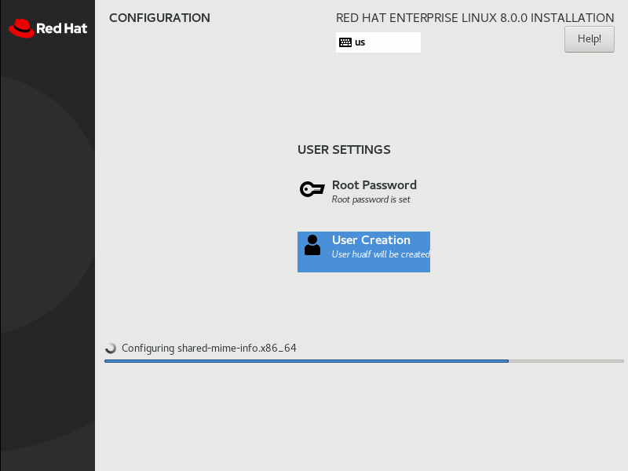
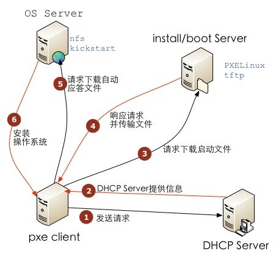
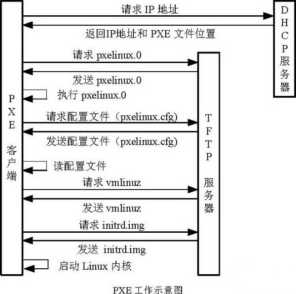

第十二章 安装红帽企业Linux
目标：
- 在服务器和虚拟机上安装红帽企业Linux。
章节：
- 安装红帽企业Linux
- 使用Kickstart自动安装
- 安装和配置虚拟机
第一节：安装红帽企业Linux
目标：
- 完成本节后，学生应该能在服务器上安装红帽企业Linux。
选择安装介质：
- 红帽提供了几种安装介质，可使用自己的有效订阅从客户门户网站中下载。
1. DVD iso文件：
a. 含有Anaconda、BaseOS 和 AppStream 软件包仓库。
b. iso映像中包含安装所需的所有软件包。
2. 含有Anaconda的启动iso文件：
a. 它需要配置网络，以便通过HTTP、FTP或NFS访问软件仓库。
3. 含有预构建系统磁盘的QCOW2映像：
a. 可在云或虚拟化环境中部署为虚拟机。
b. QCOW2（QEMU Copy On Write）是红帽使用的标准镜像格式。
c. 红帽为四种处理器架构提供安装介质：
1）x86 64 位（AMD和Intel）
2）IBM Power Systems（Little Endian）
3）IBM Z
4）ARM 64 位
使用Composer构建镜像：
- Composer 是RHEL 8中的新工具。
- 管理员可以构建自定义系统镜像，以便在云平台或虚拟环境中部署。
- Composer使用 Cockpit 图形化控制台，也可使用 composer-cli 命令行工具。
通过Anaconda安装系统的两种方法：
- 手动安装将与用户进行交互
- 自动安装将使用Kickstart文件，它会告诉Anaconda如何安装系统。
使用图形界面安装RHEL：略
对安装进行故障排除：
- 在RHEL 8安装期间，Anaconda提供了两个虚拟控制台。
- 第一个虚拟控制台有五个窗口，它们由 tmux 提供，可通过 Ctrl+Alt+F1 访问该控制台。
- 第二个虚拟控制台（默认）显示图形界面，可通过 Ctrl+Alt+F6 来访问该控制台。

- 在第一个虚拟控制台中，tmux 在第二个窗口中提供了shell提示符，以便在安装过程中检查
系统并进行故障排除。

- 另外的窗口中提供了诊断消息、日志及其他信息。

练习 P338：INSTALLING RED HAT ENTERPRISE LINUX
第二节：使用Kickstart自动安装
目标：
- 完成本节后，学生应该能：
- 讲解Kickstart概念和架构。
- 使用Kickstart Generator网站创建Kickstart文件。
- 使用文本编辑器修改现有Kickstart文件，并使用ksvalidator检查其语法。
- 将Kickstart文件发布到安装程序。
- 执行网络Kickstart安装。
创建Kickstart配置文件：
- 管理员可使用Kickstart来自动安装RHEL。
- 作为RHEL的安装程序Anaconda，需要知道如何安装操作系统。
- Kickstart的配置文件里面包含了所有安装需要的数据，就不需要人机交互安装了。
- Kickstart配置文件开头是指令列表，定义了目标系统如何被安装。
- 行的开头如为 #，会被忽略。
- 附加段落以 % 开头，%end 结尾。
- %package 段定义需要安装的软件：
1. 内容为软件名（不含版本）或包组名（以 @ 开头）
2. 包组内包含 mandatory、default 和 optional 三种类型的软件包。
3. Kickstart安装默认安装 mandatory 和 default 包。
4. 软件包名前加 "-" 表示不安装，除非该软件包为 mandatory 或其它软件的依赖包。
- %pre 段中的脚本在磁盘分区前执行，较少使用。
- %post 段中的脚本在软件包安装完成后执行，较为常用。
- %pre、%post、%packages 顺序无关紧要。
Kickstart文件命令：
- 安装命令：
1. url：指定安装介质的URL
2. repo：指定到哪里查找要安装的其他软件包，此选项必须指向有效的yum存储库。
repo --name="appstream" \
3. text：强制文字化安装
4. vnc：定义图形化安装过程可以通过vnc远程查看
vnc --password=redhat
- 分区命令：
1. clearpart：安装前清空指定分区内容
clearpart --all --drives=sda,sdb --initlabel
2. part：定义分区大小、格式、名称
part /home --fstype=ext4 --label=homes --size=4096 --maxsize=8192 --grow
3. ignoredisk：安装时忽略特定磁盘
ignoredisk --drives=sdc
4. bootloader：定义安装bootloader到哪个磁盘
bootloader --location=mbr --boot-drive=sda
5. volgroup,logvol：创建LVM卷组和逻辑卷
part pv.01 --size=8192
volgroup myvg pv.01
logvol / --vgname=myvg --fstype=xfs --size=2048 --name=rootvol --grow
logvol /var --vgname=myvg --fstype=xfs --size=4096 --name=varvol
6. zerombr：如果磁盘格式不能识别就初始化
- 网络命令：
1. network：定义网卡配置，并在安装环境中激活。
network --device=eth0 --bootproto=dhcp
2. firewall：定义目标系统中防火墙的配置
firewall --enabled --service=ssh,http
- 位置和安全命令：
1. lang：定义安装过程和系统的默认语言
lang en_US.UTF-8
2. keyboard：定义系统默认键盘布局
keyboard --vckeymap=us --xlayouts=''
3. timezone：定义时区，NTP服务器，硬件时钟是否使用UTC。
timezone --utc --ntpservers=time.example.com Europe/Amsterdam
4. authselect：定义操作系统的用户认证选项，查阅 man 8 authselect。
5. rootpw：定义root初始密码
rootpw --plaintext redhat
rootpw --iscrypted $6$KUnFfrTzO8jv.PiH$YlBbOtXBkWzoMuRfb0.SpbQ....XDR1UuchoMG1
6. selinux：定义目标系统的SELinux模式
selinux --enforcing
7. services：定义在默认的 runlevel 下启动哪些服务，关闭哪些服务。
services --disabled=network,iptables,ip6tables --enabled=NetworkManager,firewalld
8. group,user：定义添加哪些本地用户和组
group --name=admins --gid=10001
user --name=jdoe --gecos="John Doe" --groups=admins --password=changeme --plaintext
- 杂项命令：
1. logging：定义安装过程如何写入日志
logging --host=loghost.example.com --level=info
2. firstboot：定义第一次启动是否启动配置页面
firstboot --disabled
3. reboot,poweroff,halt：定义安装完毕后做什么
Kickstart文件示例：
- 该文件的第一部分由安装命令组成，如磁盘分区和安装源等。

- 第二部分包含 %packages 部分，说明应当安装的软件包和软件包组，以及不安装的软件包。

- 最后一个部分包含所有 %pre 和 %post 安装脚本。

* 注意：
在Kickstart文件中，缺少必需值会导致安装程序中断并以交互方式提示用户输入答案
或完全中止安装。
Kickstart安装步骤：
- 要想成功地自动安装红帽企业Linux，请按照以下步骤操作：
1. 创建Kickstart文件。
2. 将Kickstart文件发布到安装程序。
3. 启动Anaconda并将其指向Kickstart文件。
创建Kickstart文件：
- 使用Kickstart Generator网站：https://access.redhat.com/labs/kickstartconfig/
- 该网站需红帽订阅的用户使用。

- 使用文本编辑器：
1. 从头开始创建Kickstart过于复杂，建议编辑现有的Kickstart文件。
2. 每个安装都会创建 /root/anaconda-ks.cfg 文件，其中包含了该安装中使用的
Kickstart指令，可以参考该文件来生成新的Kickstart文件。
3. ksvalidator 可检查Kickstart文件中语法错误。
4. 它将确保关键字和选项的正确使用，但无法验证URL路径、单个软件包或组，也无法验证
%post 或 %pre 脚本（pykickstart软件包提供）。

将Kickstart文件发布到Anaconda：
- 安装程序支持以下位置存放的Kickstart文件：
1. FTP、HTTP或NFS网络服务器
2. USB磁盘或CD-ROM
* 注意：Kickstart文件需提前封装入CD-ROM中，BIOS与UEFI固件引导的封装方式存在差异！
3. 系统上要安装的本地硬盘
- 安装程序必须访问Kickstart文件，然后才能开始自动安装。
启动Anaconda并将其指向Kickstart文件：
- 选择某种Kickstart方法后，通过将 inst.ks=LOCATION 参数传递给安装内核，安装程序就会
知道在何处查找Kickstart文件。
- 如下示例：
inst.ks=http://server/dir/file
inst.ks=ftp://server/dir/file
inst.ks=nfs:server:/dir/file
inst.ks=hd:device:/dir/file
inst.ks=cdrom:device

- 使用Virtual Machine Manager或virt-manager安装操作系统，可以在URL Options下的
框中指定 Kickstart URL。
- 安装物理计算机时，按 Tab 键中断启动过程，向安装内核中添加 inst.ks=LOCATION 参数。
* 注意：
PXE与Kickstart无人值守安装系统原理：


参考文档：
1. RHEL 8高级安装中Kickstart方式的说明：
2. CentOS 6.4下PXE+Kickstart无人值守安装操作系统：
3. CentOS 6.7下Kickstart无人值守安装（老男孩）：
练习 P349：AUTOMATING INSTALLATION WITH KICKSTART
第三节：安装和配置虚拟机
目标：
- 完成本节后，学生应该能使用Cockpit在红帽企业Linux服务器上安装虚拟机。
KVM虚拟化简介：
- 虚拟化允许单个物理计算机分为多个虚拟机（VM），每个虚拟机可以分别运行独立操作系统。
- RHEL 8支持KVM，它是在Linux内核中内置的完整虚拟化解决方案。
- 在RHEL中，使用virsh命令或Cockpit来管理KVM。

配置RHEL物理系统作为虚拟化主机：
- 为虚拟主机安装 virt Yum模块。


- 使用 virt-host-validate 命令验证系统要求（Intel VT-x 或 AMD-V 64bit）。

使用Cockpit管理虚拟机：
- virt Yum模块提供了 virsh 命令来管理虚拟机。
- Cockpit工具提供了一个Web控制台界面，用于进行KVM管理和虚拟机创建。

- 安装 cockpit-machines 软件包，为Cockpit添加 Virtual Machines 菜单。
$ yum install -y cockpit-machines
- 如果Cockpit尚未运行，需将其启动并启用。
$ systemctl enable --now cockpit.socket
- 访问Virtual Machines菜单。
- 单击Create VM并在Create New Virtual Machine窗口中输入虚拟机配置。

- 单击Create将创建虚拟机，单击Install启动操作系统安装。
* 注意：此处虚拟机创建
- Cockpit可显示安装系统的虚拟机控制台。

练习 P357：INSTALLING AND CONFIGURING VIRTUAL MACHINES
Lab P359：INSTALLING RED HAT ENTERPRISE LINUX